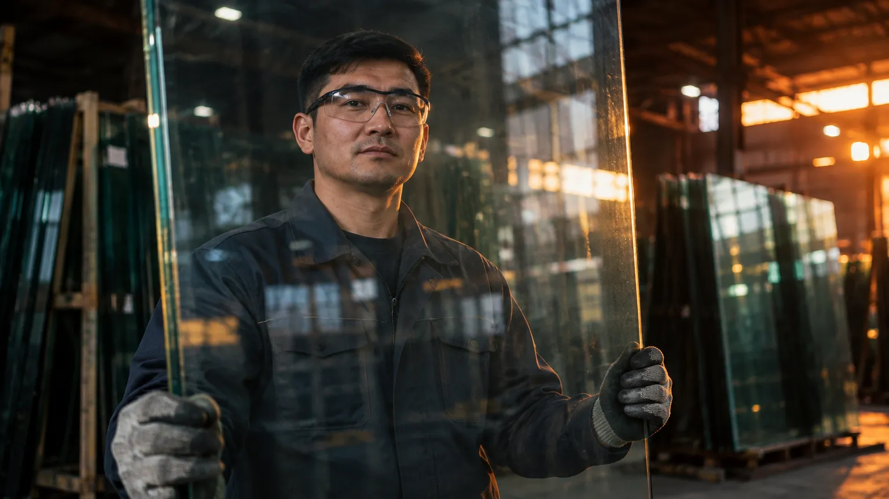

Стекло с завода для переработки, окон, фасадов и стройки
Кварцевый песок, сода и доломит. Из этой смеси завод варит стекло каждый день
Смесь плавится примерно при 1 500 °C. Печь флоат-линии не останавливают годами, поэтому поставки идут без перерывов
Расплав растекается по ванне с жидким оловом. Так получается ровная гладкая поверхность без шлифовки
Ленту медленно остужают, проверяют и режут на листы нужного формата
70 % стекла остаётся в Казахстане, 30 % уходит в Россию, Центральную Азию и Европу
Стекло встаёт в окна, витрины и фасады. Половина стекла в стране теперь своя, а не привозная
Выберите свою задачу — справа появится, что даст завод
Толщины, форматы и паспорт качества в PDF
Флоат-стекло — основа для закалки, стеклопакетов, триплекса, зеркал и мебели. 2–12 мм
Характеристики и PDF →Энергосберегающее стекло для окон: держит тепло зимой. Своя линия на 5 млн м² в год
Характеристики и PDF →Листы нарисованы кодом — заменим на фото продукции завода
У каждой цифры — открытый источник

Покупайте, продавайте или работайте вместе с заводом